Wochenplan
Stunden, Pausen, Vertretungen und Ausfälle im Wochenüberblick.
ha_default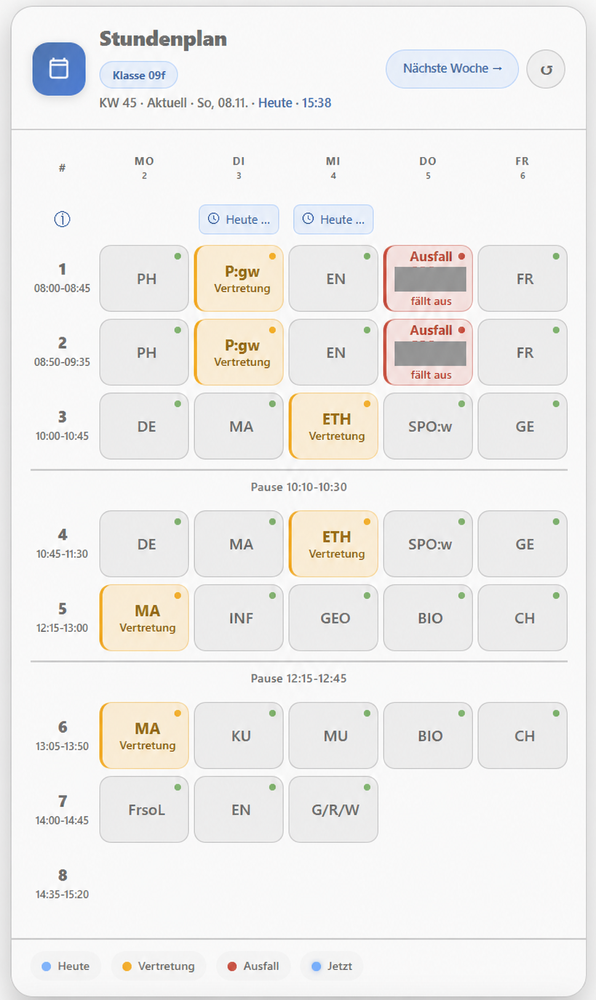
ha_defaultUnterricht, Vertretungen und Schulferien direkt auf deinem Dashboard. Für Schüler, Lehrkräfte und Familien, die ihren Alltag im Blick behalten möchten.
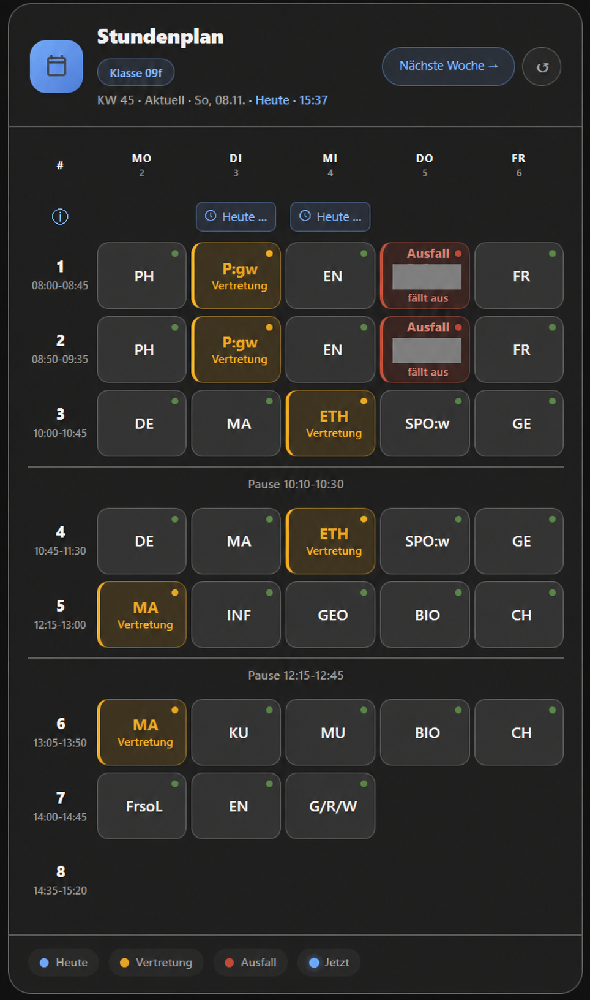
Die aktuellen Beta-Karten in Home Assistant – hell und dunkel. theme: ha_default übernimmt die Darstellung deines aktiven HA-Themes.
13 Screenshots aus Home Assistant. Namen und Lehrerkürzel sind unkenntlich gemacht; die betroffenen Bilder wurden zur Anonymisierung bearbeitet. Bilder anklicken, um sie groß zu öffnen.
Stunden, Pausen, Vertretungen und Ausfälle im Wochenüberblick.
ha_default
ha_defaultAufklappbare Klassen mit Wochenplan und nächster Stunde.
ha_default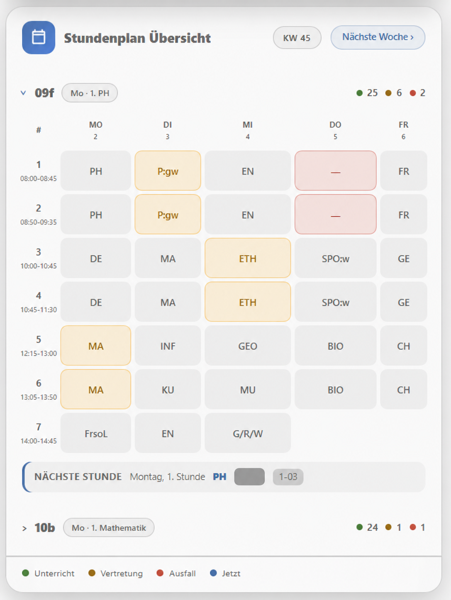
ha_default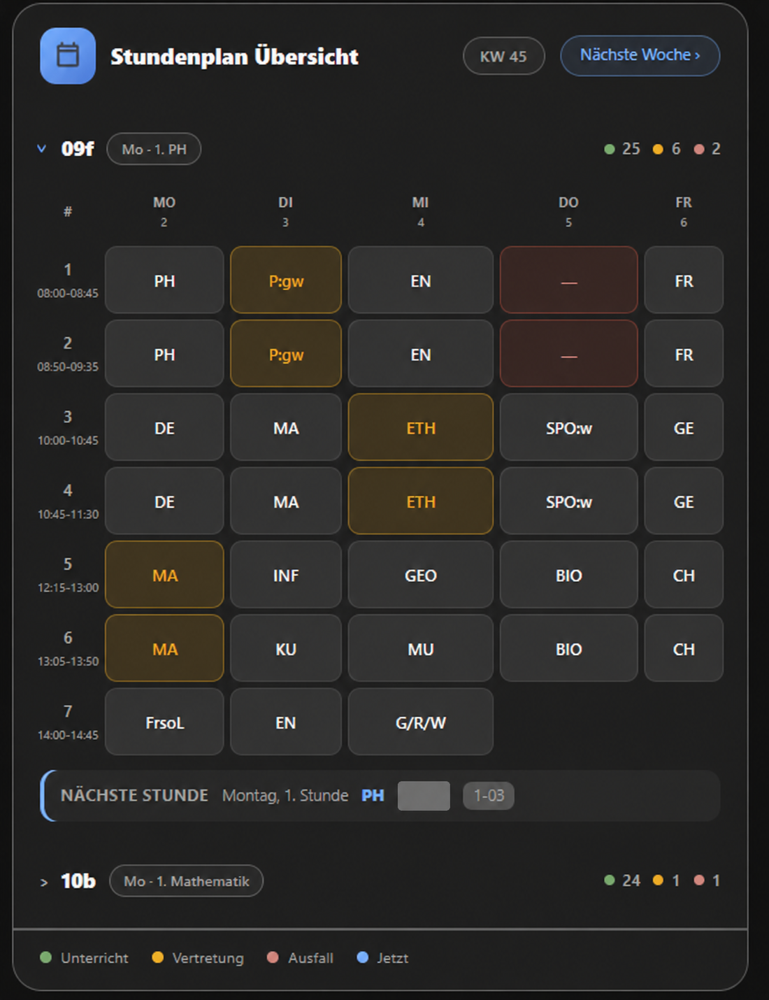
Die Bilder zeigen den Zustand „Unterricht beendet“.
ha_default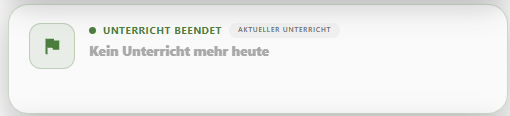
ha_default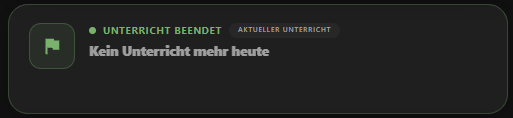
Hinweise der Schule nach Tag gegliedert und einzeln lesbar.
ha_default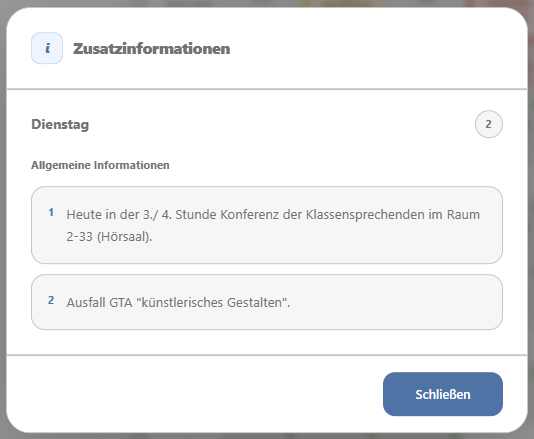
ha_default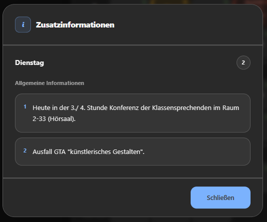
Fach, Zeit, Lehrkraft, Raum und Klasse übersichtlich in einem Dialog.
ha_default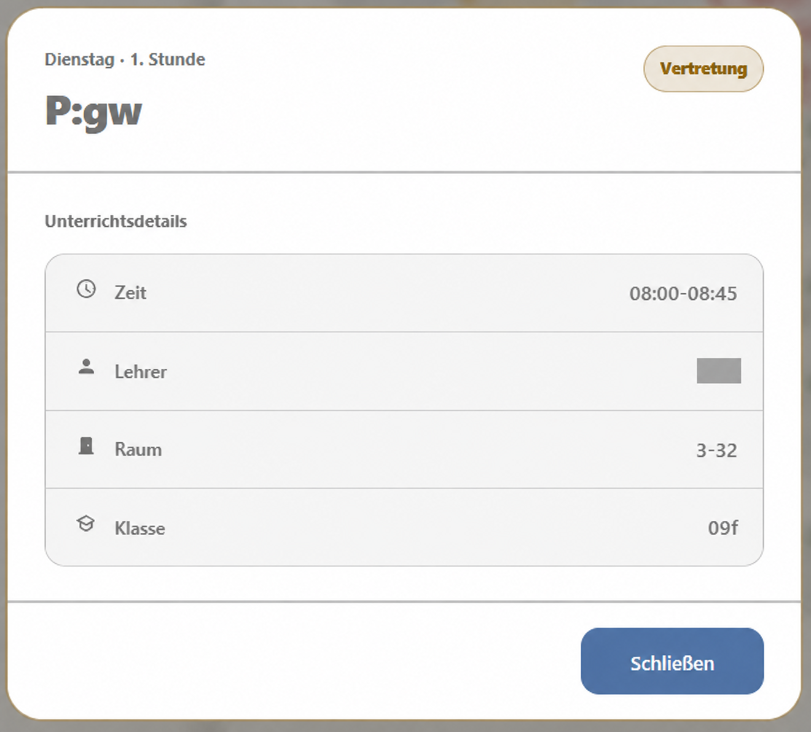
ha_default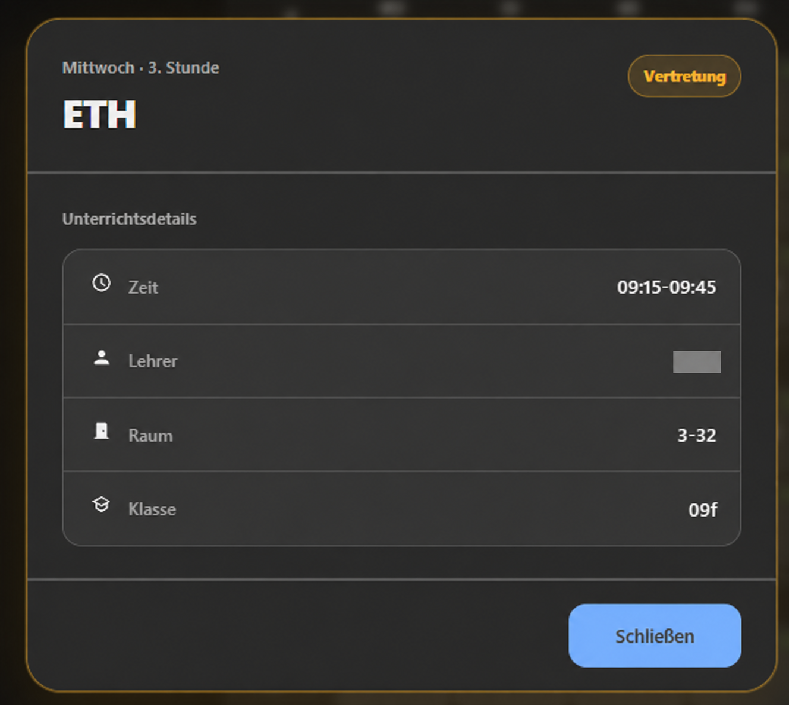
Mitteilung der Schule und vorhandene Unterrichtsdetails in getrennten Bereichen.
ha_default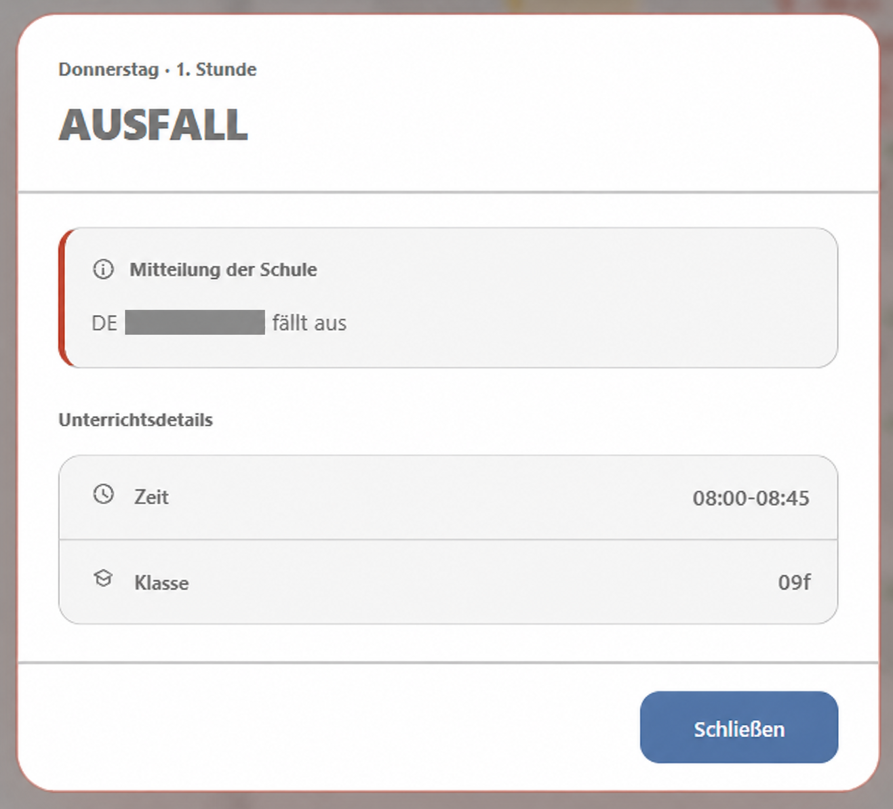
ha_default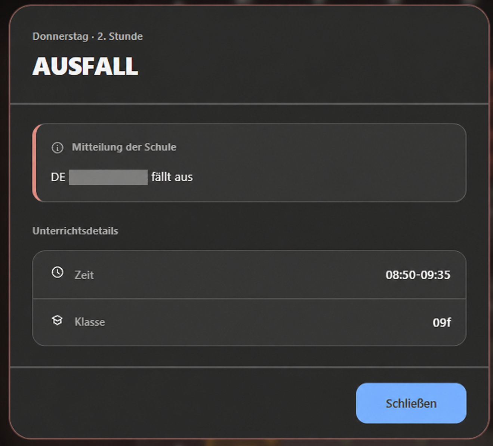
Zeit, Lehrkraft, Raum und Klasse einer regulären Unterrichtsstunde.
ha_default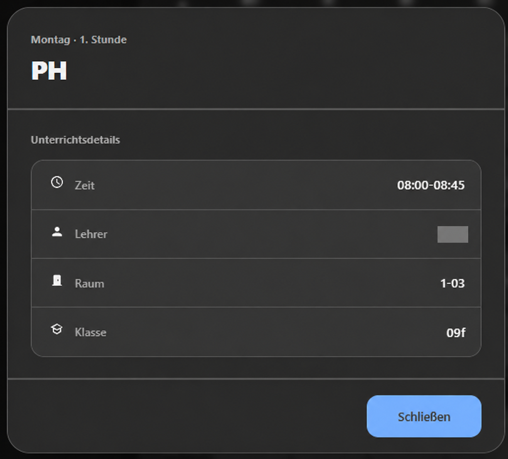
Für die regulären Stundendetails liegt eine Aufnahme im dunklen Modus vor.
Hier laufen die Karten des main-Standes mit Beispieldaten. Die aktuellen Beta-Ansichten findest du in der Bildergalerie darüber. Wechsle die Ansicht, öffne eine Stunde oder probiere die mobile Darstellung aus.
Eine Woche, fünf Tage und alle Änderungen. Klicke auf eine Unterrichtsstunde, um die Details zu sehen.
Home Assistant → Dashboard bearbeiten → Karte hinzufügen → Manuell. YAML einfügen und die Entity-IDs prüfen.
VpMobile24 verbindet die Daten deiner Schule mit den Möglichkeiten von Home Assistant.
Vertretungen und Ausfälle werden in den Karten gekennzeichnet. Fach, Lehrkraft, Raum und Zusatzinfos findest du in den Stundendetails.
Wochenplan ansehen ↗Mehrere Klassen erhalten eigene Sensoren. Die Mehrklassen-Karte bündelt ihre Stundenpläne in einer gemeinsamen Ansicht.
Mehrklassen-Karte ansehen ↗Im Lehrermodus wird nach Lehrerkürzel gefiltert. Eigene Stunden, Vertretungen und vorhandene Pausenaufsichten bleiben zusammen im Blick.
Lehrermodus einrichten ↗Wähle dein Bundesland für die Ferienerkennung. Die Karte zeigt eine eigene Ferienansicht. A/B-Wochen und Stunde 0 werden bei vorhandenen Schuldaten unterstützt.
Ferienansicht ansehen ↗Nutze die Sensoren etwa für eine morgendliche Übersicht oder eine Nachricht bei Planänderungen.
Du brauchst Home Assistant, HACS und die Stundenplan24-Zugangsdaten deiner Schule. Alternativ ist eine manuelle Installation möglich.
Füge das Repository in HACS als Integration hinzu, lade VpMobile24 herunter und starte Home Assistant neu.
In HACS öffnen ↗Öffne Einstellungen → Geräte & Dienste → Integration hinzufügen → VpMobile24. Wähle Schüler, Lehrer oder Demo und trage Schul-ID, Passwort und Server ein.
Danach wählst du Klasse oder Lehrerkürzel, Fächer beziehungsweise Kurse und dein Bundesland.
Die Integration liefert die Lovelace-Karten mit und registriert ihre Ressource. Füge die gewünschte Karte deinem Dashboard hinzu und wähle deine Sensoren aus.
Konfiguration erstellen ↗Aktiviere für VpMobile24 in HACS die Anzeige von Beta-Versionen und wähle die gewünschte Vorabversion. Nach dem Update Home Assistant neu starten und das Dashboard neu laden.
Beta-Release-Notes ↗Lade die gewünschte Version von GitHub herunter und kopiere custom_components/vpmobile24 nach config/custom_components/vpmobile24. Starte anschließend Home Assistant neu und richte die Integration ein.
Die wichtigsten Antworten direkt hier. Weitere Konfigurationsmöglichkeiten findest du in der Projekt-Dokumentation.
Vollständige Dokumentation ↗Die genauen Entity-IDs hängen von deiner Einrichtung ab. Du findest sie unter Einstellungen → Geräte & Dienste → VpMobile24.
| Entität | Inhalt |
|---|---|
| Wochentabelle | Stundenplan für die Wochenkarte |
| Nächste / übernächste Woche | Plan für kommende Wochen |
| Heutiger Stundenplan | Alle Stunden des Tages |
| Aktueller Unterricht / nächste Stunde | Fach, Zeit, Lehrkraft und Raum |
| Änderungen / Zusatzinfos | Vertretungen, Ausfälle und Schulhinweise |
| Ferien | Ferienstatus für das Bundesland |
| Kalender | Wochenplan in der Kalenderansicht |
Ersetze Sensor und Benachrichtigungsdienst durch deine eigenen Entitäten. Die Vorlage reagiert auf Zustandsänderungen des Änderungssensors.
alias: Stundenplanänderung melden
triggers:
- trigger: state
entity_id: sensor.vpmobile24_aenderungen
conditions:
- condition: template
value_template: >-
{{ trigger.from_state is not none
and trigger.to_state is not none
and trigger.from_state.state not in ['unknown', 'unavailable']
and trigger.to_state.state not in ['unknown', 'unavailable'] }}
actions:
- action: notify.mobile_app_dein_handy
data:
title: Stundenplan aktualisiert
message: Prüfe deinen Stundenplan auf Änderungen.Starte nach Installation oder Update Home Assistant neu und lade das Dashboard neu. Prüfe unter Einstellungen → Dashboards → Ressourcen, ob die Kartenressource als JavaScript-Modul vorhanden ist:
/local/vpmobile24/vpmobile24-card.js
Falls nötig, ergänze die Ressource manuell. Leere bei weiterhin veralteter Anzeige den Browser- beziehungsweise Frontend-Cache.
VpMobile24 unterstützt Schulen, die Stundenplan24 beziehungsweise VpMobil nutzen. Schul-ID, Passwort und gegebenenfalls den Zusatzserver erhältst du von deiner Schule. Verwende den dort angegebenen Server.
Zugangsdaten und weitere Optionen kannst du über die Integration verwalten. Bei geändertem Passwort bietet die Integration eine erneute Authentifizierung an.
Aktualisiere die Integration und öffne die Konfiguration erneut. Die Lehrerauswahl berücksichtigt Klassen- und Tagesplandaten. Wähle im Schülermodus die benötigten Parallel- und Oberstufenkurse in der Fächerauswahl aus.
Bei weiterhin fehlenden Daten helfen die XML-Rohdaten deiner Schule bei der Fehlersuche.
Anleitung für XML-Daten ↗Füge VpMobile24 für jede gewünschte Klasse erneut hinzu. Gleiche Zugangsdaten können für unterschiedliche Klassen verwendet werden. Für Lehrkräfte wählst du beim Einrichten den Benutzertyp Lehrer und anschließend das eigene Kürzel.